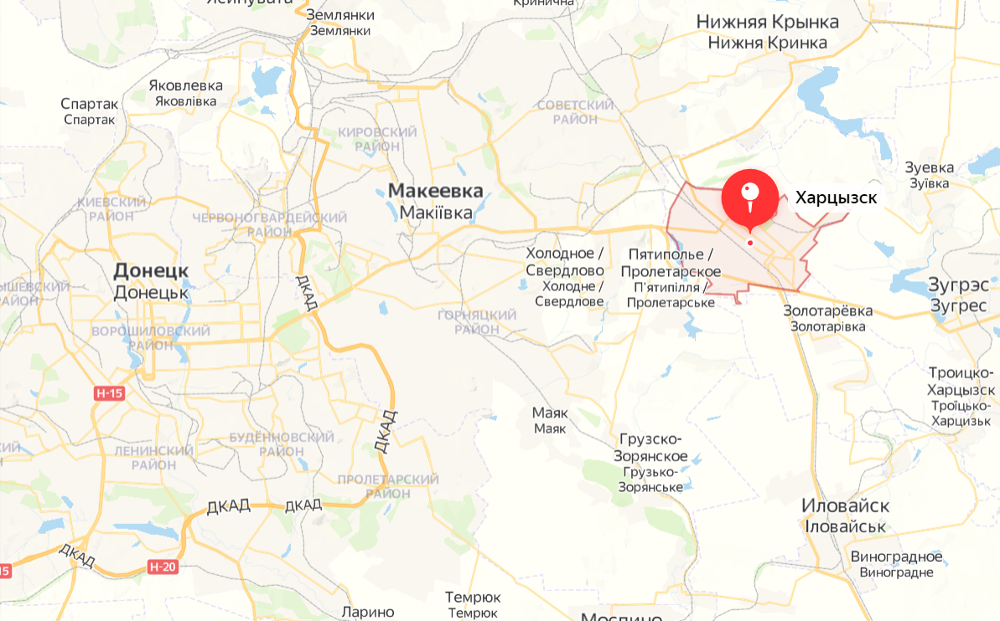

География города
Город Харцызск расположен на 48,0424 северной широты и 38,1473 восточной долготы на высоте 241 метр над уровнем моря.

Административное деление города
В административном отношении Харцызску подчиняются город Зугрэс, город Иловайск, поселки городского типа Войково,
Горное, Зуевка, Николаевка, Покровка, Троицко-Харцызск, Шахтное, Широкое, 6 сельских населенных пунктов.